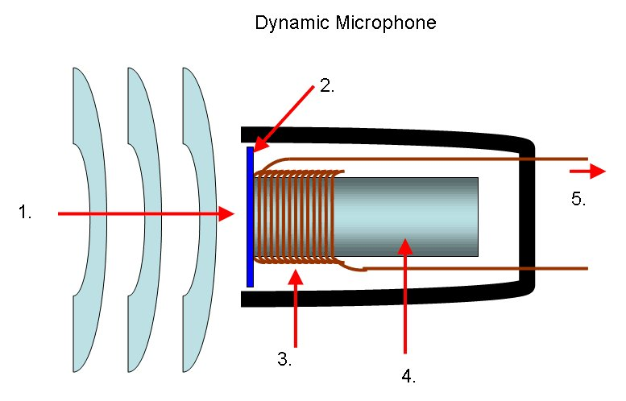
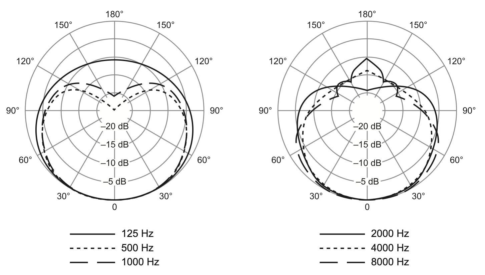
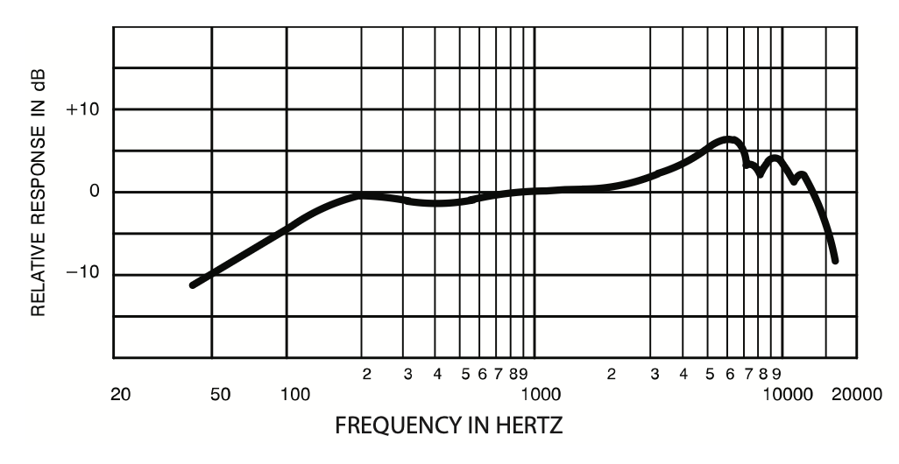
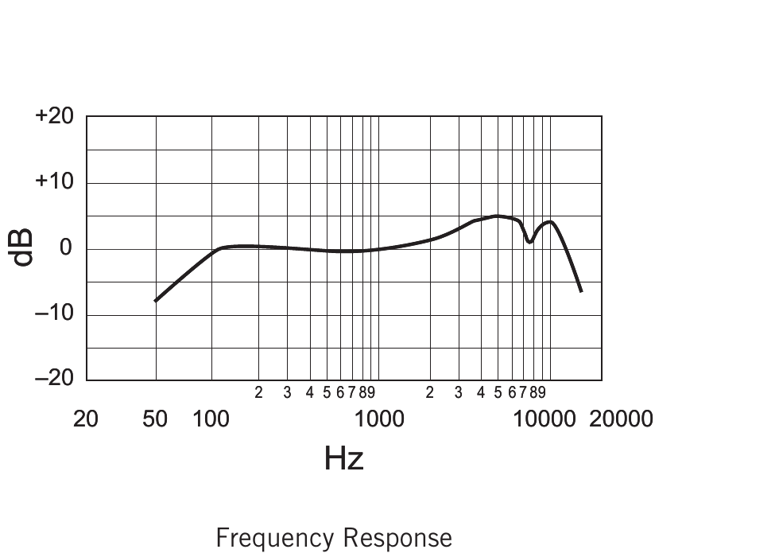
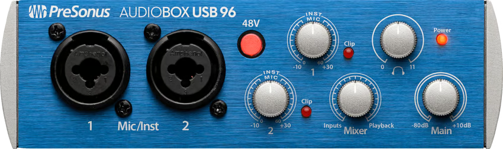
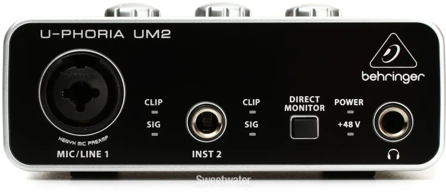
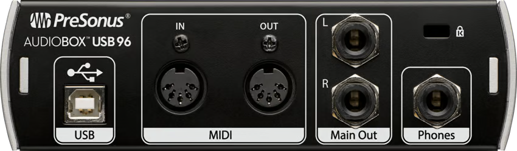
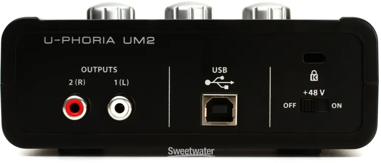

Up to now, the sounds you've worked with have been handed to you. Starting this week, you make your own. To do that, you have to understand what's happening between the air in front of a microphone and the file on your computer. This reading walks the path one stage at a time, with the four pieces of equipment you'll work with in this module: a dynamic microphone, an XLR cable, an audio interface, and a computer. Wednesday you'll plug them in for real.
Take from the lab's gear storage: audio interface, headphones. Plug in and run through the start-of-session steps on the laminated Session Routines card before continuing here.
Every recording setup has a signal flow. That's a fancy phrase for a simple idea: sound starts somewhere (a voice, a guitar, a slammed door, a crumbling sheet of paper) and ends up stored somewhere (a file on a hard drive). Between those two endpoints, the sound passes through equipment. Each piece of equipment has a job, and each piece is a choice. A different mic, a different cable, a different interface, and you get a different recording, even if the source is identical.
The signal flow you'll use most often this semester, and the one MB2525's gear is designed for, is what we'll call the basic recording chain. It has five stages: three devices, connected by two cables.
Read the diagram left to right and you can see what's happening at each transition. A sound in the air vibrates the microphone, and the microphone produces a small electrical signal (this is what we'll call mic level, and it matters more than it sounds like it should). That signal travels down an XLR cable to an audio interface. The interface does two jobs: it amplifies the small mic-level signal up to something the computer can work with, and it converts that analog electrical signal into a stream of numbers (digital audio, the topic of all of Module 2). Those numbers travel over a USB cable to the computer's audio input, where any recording program can read from them.
The five stages alternate: device, cable, device, cable, device. The devices do the work of converting and processing the signal; the cables carry the signal from one device to the next. Each cable type has a job that matches the kind of signal it carries: XLR for mic-level analog audio, USB for digital data.
Once you've read all the sections that follow, the diagram above should feel less like a sequence of mystery boxes and more like a list of decisions you understand. When you sit down at a station Wednesday, you'll be operating every stage of this chain.
This is one signal flow out of many. Next week we'll look at others. A guitar plugged into the same interface uses a different cable carrying a different kind of signal. A condenser microphone needs power that this dynamic mic doesn't. A synthesizer puts out a signal at a different level entirely. The basic chain you'll learn this week is the most common one and the one every station is built around, but the world of recording has more cables, more mic types, and more signal levels than what's in the diagram above. We'll get to them.
A microphone is a transducer: a device that converts one kind of energy into another. The mic's job is to convert acoustic energy (changing air pressure in the room) into electrical energy (a small voltage that varies the same way the air did). Every microphone does this. They differ in how.
The mics in MB2525's gear storage are dynamic microphones. The word "dynamic" refers to the mechanism inside: a small, lightweight diaphragm is attached to a coil of fine wire, and that coil sits inside the field of a permanent magnet. When sound waves push on the diaphragm, the diaphragm moves, which moves the coil, which moves inside the magnetic field. A coil moving in a magnetic field generates an electrical current. (This is the same principle, in miniature, that makes generators and electric motors work.)

One thing the image doesn't show: the third connection inside an XLR cable, the ground. We'll meet it in section 4 when we look at the cable itself. The ground doesn't connect to the diaphragm-coil-magnet assembly the way the two signal wires do; it connects to the mic body and the cable shield, and its job is electrical safety and noise rejection. For now, the two wires in the image are the two that carry your sound.
The key thing to notice: the mic itself doesn't need power to do this. The energy that makes the electrical signal comes from the sound itself, transferred mechanically through the diaphragm and the coil. This is why a dynamic mic just works the moment you plug it in.
Dynamic mics have characteristic strengths. They're rugged (the moving parts are simple and not delicate). They handle loud sources well without distorting. They have a clear, present sound that flatters voices and many instruments. They're affordable and reliable enough that they end up on stages and in studios all over the world. The Shure SM57 and SM58 are the two most-recorded microphones in history, and both are dynamics.
They also have characteristic limits. Because the diaphragm has a coil and magnet attached to it, it's relatively heavy compared to other mic designs, and it doesn't respond to extremely fast or quiet sound details as faithfully as some other mic types. For most of what you'll do in this course, that limit doesn't matter. The dynamic is the right tool. In Week 7 we'll meet a different transducer type (the condenser) that handles those finer details, and we'll talk about when to reach for each.
Every microphone manufacturer publishes a spec sheet for each model: a single-page document that lists what the mic is, what it does, and how it does it. Some of the contents are practical numbers (weight, dimensions, what connector it uses). The two parts that tell you about the sound of the mic are two charts: the polar pattern, which shows what directions the mic listens to, and the frequency response, which shows which parts of the audio spectrum the mic emphasizes. Learning to read both is how you make sense of why two mics from the same manufacturer, that look almost identical from the outside, end up sounding different and getting used for different jobs.
Both mics at the lab stations come from this family. The SM57 and the SM58 share the same internal cartridge, the same cardioid polar pattern, and the same chassis design. What separates them is the frequency response tailoring, which the spec sheets make explicit.
A polar pattern chart shows what a mic picks up from every direction around it. You can think of it as a top-down map of the mic's hearing. The mic sits at the center. The angle around the chart tells you where the sound is coming from: 0° at the bottom is directly in front of the mic (where you'd point it at your source); 90° and 270° are the two sides; 180° at the top is directly behind the mic. The concentric rings, labeled in dB going outward, tell you how loud the mic picks up sound from that angle.

The curve traced on the chart is what the mic actually does. Reading the plot above: at 0° (directly in front), the curve sits at the outermost ring, which means the mic is most sensitive there. That's full pickup. As you move around toward 90° (the side of the mic), the curve pulls inward, landing somewhere between the -5 and -10 dB rings depending on frequency. The side of the mic picks up sound, but less strongly than the front does (about a third to half as loud, roughly). Keep going around to 180° (directly behind the mic) and the curve pinches almost to the center: at -20 dB or beyond, the rear of the mic is barely picking up anything at all. This shape, full in front, reduced at the sides, near-zero behind, is what cardioid means.
You'll notice the chart actually shows several curves at once, one for each frequency the manufacturer measured (125, 500, 1000, 2000, 4000, 8000 Hz). The shape isn't perfectly identical at every frequency: at very low frequencies the mic picks up a bit more from the rear than it does at mid frequencies; at very high frequencies the pattern can get a little narrower in front. But all of these curves are recognizably the same cardioid shape. For our purposes, "cardioid" is the right name for what this mic does at any frequency you'd care about.
The operational consequence is simple: point the front of the mic at the sound you want, and put what you don't want behind it. If a noisy fluorescent fixture overhead, a classmate's whispering, or the room's general background wash is behind the mic while your source is in front, the mic rejects them. If they're in front and your source is behind, the mic captures the unwanted material and rejects your source. Mic placement is half of getting a good recording.
The frequency response chart shows which parts of the audio spectrum the mic emphasizes and which parts it de-emphasizes. The horizontal axis is frequency in Hz, running from low (around 20 Hz, the bottom of human hearing) on the left to high (around 20,000 Hz, the top of human hearing) on the right, on a logarithmic scale so equal distances on the chart correspond to equal musical intervals. The vertical axis is sensitivity in dB, relative to a flat reference of 0 dB. A curve that sits at 0 dB across the whole chart would mean the mic responds equally to every frequency. A curve that rises above 0 at some point means the mic emphasizes that part of the spectrum; a curve that falls below means the mic de-emphasizes that part.


SM57. The low end has a long rolloff: the curve drops from 0 dB at around 200 Hz all the way down to -12 dB at 45 Hz. Through the mids the curve sits near 0 dB. Starting around 2 kHz it climbs into a presence peak, reaching about +6 dB at 6 kHz: an emphasis in the upper-mid range where things like the snap of a snare drum, the bite of a guitar amp, and the consonants of a speaking voice all live. From there the curve has a distinctive wobble before rolling off: down to +4 dB at 7 kHz, +3 dB at 8 kHz, back up to +5 dB at 9 kHz, then the high end drops away. The SM57's spec sheet describes this curve as "tailored for drums, guitars, and vocals," and you can see what tailoring means: it's the shape of this curve, designed to flatter the things this mic gets pointed at.
SM58. Shorter rolloff at the bottom: the curve reaches 0 dB at around 100 Hz and only drops to -9 dB by 50 Hz. Through the mids the curve sits flat, like the SM57. A gentle climb from 1 kHz up to a presence peak of +5 dB at 4 kHz. Then a distinctive feature: a steep dip at 7.5 kHz that briefly returns to 0 dB before climbing back up to +5 dB at 9 kHz, then the high-end rolloff. The SM58's spec sheet calls this "tailored for vocals, with brightened midrange and bass rolloff." The bass rolloff is part of why this mic works well for singers: when a singer holds a cardioid mic close to their mouth, low frequencies get artificially boomy from a thing called proximity effect, and the SM58's shorter low-end extension helps compensate.
Same family of mic, two different tunings. Both share the cardioid pattern, the flat midrange, and a presence peak in roughly the same upper-mid region. What's different is the low end (the SM57 extends lower, the SM58 reaches flat sooner) and the shape of the high end (the SM57 has a wobble after its peak; the SM58 has a sharp dip-and-recovery). The SM57 is built for instruments that have musical content down low, like kick drums and guitar cabinets. The SM58 is built for the human voice, where the low-end shaping helps with proximity effect and the high-end shaping helps with vocal clarity. The spec sheets are showing the same kind of intentional design choices, expressed as two different curves.
Every mic has both a polar pattern and a frequency response. Reading those two charts is how you learn what a mic is built to do, before you ever plug it in. Next week we'll look at how those same charts shift for other kinds of mics (condensers with different sensitivities, mics with omni or figure-8 polar patterns) and how to read the differences.
When the mic's coil moves and generates electricity, the voltage it produces is tiny. We're talking about a few thousandths of a volt, sometimes less. This is a category called mic level, and it's the smallest standard signal level you'll meet in audio work.
Mic-level signals are weak because the energy available to generate them is small. A diaphragm the size of a fingernail can only move so much, and the magnetic field can only induce so much voltage in the coil. To get a usable signal out of that, the mic-level signal has to be amplified, by a lot, before it's strong enough to be turned into digital audio. That amplification happens inside the audio interface. We'll get there in section 5.
Two consequences flow from mic level being weak, and they shape almost everything else in the chain:
First, weak signals are vulnerable to noise. Any electrical interference picked up between the mic and the interface (from power cables, fluorescent lights, computer monitors, radio) adds to the signal you actually want. If the interference is loud relative to your mic signal, you've recorded the interference as well as the source. This is why mic cables are built the way they are, and it's the topic of the next section.
Second, weak signals need amplification before they're useful. The interface contains a circuit called a preamplifier, or preamp, whose only job is to take that small mic-level voltage and boost it up to a much larger signal called line level. (Line level is the signal level your computer expects, and the level most other audio gear runs at internally.) The knob you'll turn to set how loud a mic comes through, called the gain, is the control for that preamp.
In audio, "level" is used in at least two different ways. You'll hear it used to refer to volume ("the bass level is too high"), and you'll hear it used to refer to signal type ("the mic level is too small for a line input"). Both are correct usages; context tells you which one is meant. When this reading says mic level, instrument level, or line level, it's always referring to the second meaning: the standard category of signal that a piece of gear puts out or expects.
The cable that runs between a microphone and an audio interface is called an XLR cable, after the three-pin connector at each end. The connector locks into place with a small spring-loaded latch (you'll feel it click; to release it, press the small tab on the side of the connector and pull). The lock matters because a mic cable that gets pulled out mid-take is the kind of small disaster the design is meant to prevent.
What makes an XLR cable different from, say, the cable that plugs your headphones into a phone is what's inside. An XLR carries three conductors (three separate wires) where a headphone cable carries two or three depending on the design.
Inside an XLR cable, two of the three wires carry the audio signal, and the third is a ground (a shield wrapped around the other two). The two signal wires carry the same audio, but one of them carries it flipped upside down compared to the other (the technical term for this is phase: when two copies of a signal are flipped this way, they're said to be out of phase). So if wire A has the waveform going up, wire B has the same waveform going down by the same amount. Two copies of the signal, one of them inverted.
When the cable picks up interference along its run (electromagnetic noise from a fluorescent light fixture overhead, say), the interference lands on both wires equally, in the same direction. So at the far end of the cable, the interface sees:
At the receiving end, the interface flips wire B upside down and sums the two wires together. The signal doubles. The noise cancels. Noise gone, signal twice as strong. This is what people mean when they call XLR cables balanced.
The cancellation and doubling that make balanced cables work are not specific to cables. They're properties of how waveforms add. When two waveforms get summed together (in any medium: in a cable, in the air, in a mixer, on a track in Audacity), the rule is the same: at every moment in time, you add the two values to get the sum.
If the two waveforms are in phase (both going up at the same time, both going down at the same time), every moment of one adds to a matching moment of the other. The peaks land on peaks, the troughs on troughs. The result is the same waveform, twice as tall.
If the two waveforms are out of phase (one is the upside-down copy of the other: where A goes up, B goes down by the same amount), every moment of one adds to a matching opposite moment of the other. Peak plus trough equals zero, at every point. The result is silence.
A balanced cable engineers this principle to its advantage. When the interface flips wire B upside down before summing the two wires, two things happen at once. The signal, which had been carried as two opposite copies (out of phase), now lands as two matching copies (in phase) and sums to double. The noise, which had been carried identically on both wires (in phase), now lands as two opposite copies (out of phase) and sums to silence. The same flip-and-sum does both jobs, because phase is what tells the math which case it's in.
The practical upshot is that XLR cables can run long distances (50, 100 feet or more) carrying small mic-level signals without picking up audible noise. For a course like this one, where cables stay short, the protection isn't strictly necessary. But this is how every professional audio environment is wired, and it's the reason XLR is the standard mic cable.
The audio interface is the box on your desk that the mic cable plugs into, and the box that connects to the computer over a USB cable. It's where the signal stops being analog (continuous electrical voltage) and starts being digital (a stream of numbers). The interface has three jobs, in order:
The interface also runs the reverse path for playback: it takes digital audio coming from the computer, converts it back to analog through a digital-to-analog converter (DAC), and sends it out to your headphones or speakers.
The stations in MB2525 are equipped with two different interface models: the PreSonus AudioBox USB 96 at some stations, the Behringer U-Phoria UM2 at others. Different interfaces lay out their controls differently. The features themselves are universal; the physical layout is the manufacturer's choice. Once you can find the universal features on any interface, you can sit down at any station.


Look at both interfaces and you'll find the same set of controls, even though they're positioned, labeled, and counted differently:
The Behringer's gain knobs are on the top of the unit, behind the front panel. There are three: Mic/Line Gain 1, Inst Gain 2, and Output. The first two control how much amplification each input gets. The Output knob controls the level going to your headphones and speakers.
The back of an interface holds the connections: the USB cable to the computer, the output jacks that feed studio monitors or other gear, and (depending on the model) MIDI ports or the phantom power switch.


Both backs have a USB-B port (where the cable that goes to the computer plugs in) and a Kensington security slot. After that they diverge. The PreSonus has two TRS output jacks (the same kind of jack a 1/4" cable plugs into, balanced like the XLR cable in section 4) for connecting to studio monitors, plus a pair of MIDI ports for controllers and synthesizers. The Behringer uses RCA jacks (the round, plastic-rimmed connectors common on consumer audio gear; unbalanced, meaning they don't have the noise-rejecting trick the XLR and TRS cables use) for its outputs, has no MIDI, and houses the +48V phantom power switch back here instead of on the front.
The PreSonus AudioBox USB 96 and the Behringer U-Phoria UM2 both retail for about $100. Look at Sweetwater's audio interface catalog, though, and the price range runs from around $50 at the bottom to over $7,000 at the top. Hosken's Introduction to Music Technology calls out the same range: from a few hundred dollars for a simple interface to about $1,000 for a midrange unit to over $10,000 for a high-end studio system. What changes across that range?
More expensive doesn't automatically mean better-sounding for what you're doing. Hosken puts it well: "price is often some sort of indicator of quality, though it is as uneven an indicator for audio interfaces as it is for cars or refrigerators." A $100 interface from a reputable manufacturer can produce recordings indistinguishable from a $1,000 one for many situations. What expensive interfaces buy you is some combination of more inputs and outputs, higher-quality components, additional features for specific workflows, and (sometimes) brand cachet. Several dimensions of variation cluster together as price climbs.
The two interfaces in MB2525 are entry-level by deliberate design. A 2-in / 2-out interface, a few hundred dollars cheaper than the next tier up, is exactly enough for the work this course covers: one source recorded at a time, prepped into a sample library, used in compositional work in Audacity (Module 3) and Ableton (Module 4). The features that justify a $500 or $1,000 or $5,000 interface are real, but they answer questions the lab interfaces don't need to answer. Once you can read a spec sheet (the manufacturer's, or a retailer's like Sweetwater's), you can match an interface to a workflow rather than pricing alone.
Optional, for the curious. None of this is required.